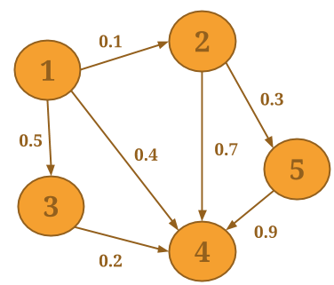
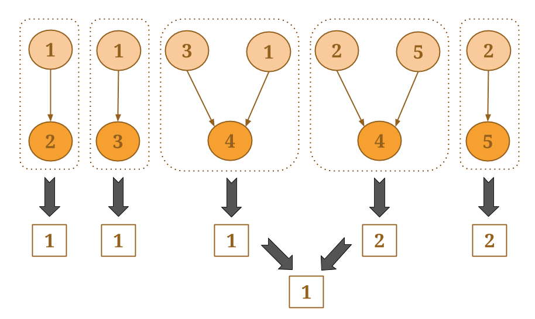
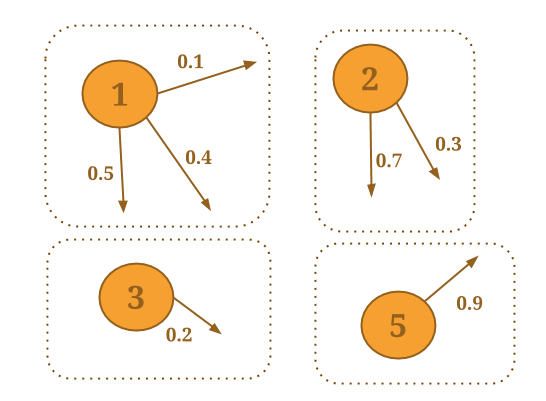

People you Might Know
Have we met before, Gelly?
In social networks, we are often shown a list of users we might know or we might want to connect to. For this last exercise, we will implement a simple application of this concept. For each user, we are going to create a list of neighbors' neighbors, who are not already in the user's friends list. Then, we are going to recommend people who appear in this list at least as many times as a user-defined threshold. The idea is that if you are friends with Alice, and Alice is friends with Bob, then there is a chance you might also know Bob. The more friends you have that are friends with Bob, the higher the chance you also know him (or might like to know him).
Neighborhood Methods
In order to complete this exercise, we need to talk a little bit more about Gelly's neighborhood methods. We already saw one of them in Tutorial#2 and used it to calculate the sum of the values of the edges for each vertex. Here, we explain in more detail how these methods work.
Neighborhood methods allow vertices to perform an aggregation on their first-hop neighborhood. reduceOnEdges can be used to compute an aggregation on the values of the neighboring edges of a vertex and reduceOnNeighbors can be used to compute an aggregation on the values of the neighboring vertices. These methods assume associative and commutative aggregations (like sum, min, and max) and exploit combiners internally, significantly improving performance. The neighborhood scope is defined by the EdgeDirection parameter, which takes the values IN, OUT or ALL. IN will gather all in-coming edges (neighbors) of a vertex, OUT will gather all out-going edges (neighbors), while ALL will gather all edges (neighbors). For example, assume that you want to select the minimum ID of all in-neighbors for each vertex in the following graph:

Vertices 2, 3, and 5 each have one in-neighbor, while 4 has four in-neighbors. Aggregations are applied on pairs of values and then get combined, until a single value is produced:

Sometimes, we want to compute more complex aggregations that a simple minimum, for which we might need to access all neighboring values of a vertex together. Gelly has special neighborhood methods for such cases, namely groupReduceonEdges and groupReduceOnNeighbors. With these methods, we also have the flexibility to return zero, one or more values per vertex.
groupReduceonEdges creates one group per vertex, where you can access the edges (of the specified EdgeDirection) and their values (if the graph is weighted). These are the groups for the example graph above and EdgeDirection.OUT:
groupReduceOnNeighbors creates one group per vertex, where, apart from the edges, you can also access the neighboring vertices, including their values. These are the groups for the example graph above and EdgeDirection.IN:
The task
Start by creating a Graph from the edges input, like in the previous tutorials, wihout reading the edge weights. Then, use a neighborhood method to gather the IDs of all neighbors of a vertex inside a HashSet. Update the vertex values to this neighborhood HashSet, using a Gelly join method. Finally, use another neighborhood method to compare each node's neighborhood with the one of its neighbors, to find vertices that they don't have in common (candidates for recommendation). Use a HashMap to count how many times you come across a candidate vertex. Finally, output the Ids of friends-of-friends that you came across at least as many times as aspecified threshold value.
Follow the steps below or grab the skeleton code from Github to get started!
Step#1: Create the Graph and initialize the vertex values
// Read the input file of edges with String Ids // Hint: use includeFields() to only read the first 2 columns of the input // and a mapper to create Edges with values of type NullValue DataSet<Edge<String, NullValue>> edges = env.readCsvFile(input) ... .map(new MapFunction<Tuple2<String, String>, Edge<String, NullValue>>() { ... }); // Create a Graph from the input edges // and initialize the vertices with a HashSet // whose only element is the vertex ID itself Graph<String, HashSet<String>, NullValue> graph = Graph.fromDataSet(edges, new MapFunction<String, HashSet<String>>() { public HashSet<String> map(String id) { ... } }, env);
Step#2: Fill in the HashSet of each vertex with its neighbors' IDs
Use reduceOnNeighbors to create a HashSet of all the neighbors for each vertex. Then, attach the computed HashSets as vertex values to the original graph:
// Fill in the HashSet of each vertex with its neighbors' IDs // Hint: use the {@link org.apache.flink.graph.Graph#reduceOnNeighbors} method // and set the EdgeDirection to ALL DataSet<Tuple2<String, HashSet<String>>> verticesWithNeighbors = ... // Attach the neighbor values to the vertices of the graph // Hint: Use the {@link org.apache.flink.graph.Graph#joinWithVertices} method Graph<String, HashSet<String>, NullValue> graphWithNeighbors = ...
Step#3: Compute the "People you Might Know" list
// Compute the "people you might know list" DataSet<Tuple2<String, String>> verticesWithList = graphWithNeighbors.groupReduceOnNeighbors( new NeighborsFunctionWithVertexValue<String, HashSet<String>, NullValue, Tuple2<String, String>>() { public void iterateNeighbors(Vertex<String, HashSet<String>> vertex, Iterable<Tuple2<Edge<String, NullValue>, Vertex<String, HashSet<String>>>> neighbors, Collector<Tuple2<String, String>> out) { HashMap<String, Integer> recommendations = new HashMap<String, Integer>(); for (Tuple2<Edge<String, NullValue>, Vertex<String, HashSet<String>>> t: neighbors) { // for every friend in the neighbors' friend list for (String friendOfFriend: t.f1.getValue()) { // exclude the vertex itself // if new candidate is found, add the ID to the HashSet with score 1 // if an existing friend is found, increase its score ... } } // only output friends-of-friends that appeared at least <threshold> times for (Entry<String, Integer> friend: recommendations.entrySet()) { if (...) { out.collect(new Tuple2<String, String>(vertex.getId(), friend.getKey())); } } } }, EdgeDirection.ALL);
That's all!
Go ahead and inspect the results. You should see pairs of e-mail addresses where the second one is a recommended friend for the first one.
If you liked Gelly and you want to know more, keep an eye on the Gellyschool website. We'll be updating it soon with more tutorials, covering iterations and other Gelly features.
Hope you enjoyed your time at Gellyschool!